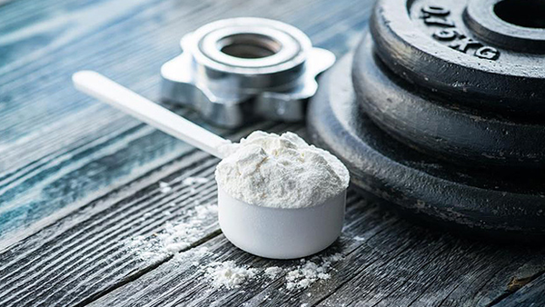

01/03/2018
Creatine

Creatine is formed of three amino acids: L-arginine, glycine, and L-methionine. It makes up about one
per cent of the total volume of human blood. Creatine is a nitrogenous organic acid that helps
supply energy to cells throughout the body, particularly muscle cells. (Nordqvist, 2017). Chemically
speaking, it shares many similarities with amino acids. Your body can produce it from the amino
acids glycine and arginine.
About 95% of your body's creatine is stored in muscles in the form of phosphocreatine. The other 5% is found in your brain, kidneys and liver. When you supplement, you increase your stores of phosphocreatine. This is a form of stored energy in the cells, as it helps your body produce more of a high-energy molecule called ATP. ATP is often called the body's energy currency. When you have more ATP, your body can perform better during exercise. The most common and well-researched supplement form is called creatine monohydrate (Pubmed.gov).
How Does It Works? Creatine can improve health and athletic performance in several ways. In high-intensity exercise, its primary role is to increase the phosphocreatine stores in your muscles. The additional stores can then be used to produce more ATP, which is the key energy source for heavy lifting and high-intensity exercise.
Creatine also helps you gain muscle in the following ways:Boosted workload: Enables more total work or volume in a single training session, which is a key
factor in long-term muscle growth.
Improved cell signalling: Can increase satellite cell signalling, which aids muscle repair and
new muscle growth.
Raised anabolic hormones: Studies note a rise in hormones, such as IGF-1, after taking creatine.
Increased cell hydration: Lifts water content within your muscle cells, which causes a cell
volumization effect that may play a role in muscle growth.
Reduced protein breakdown: May increase total muscle mass by reducing muscle breakdown.
Lower myostatin levels: Elevated levels of the protein myostatin can slow or totally inhibit new
muscle growth. Supplementing with creatine can reduce these levels, increasing growth potential.
Dosage Instructions Many people who supplement start with a loading phase, which leads to a rapid increase in muscle stores of creatine.
To load with creatine, take 20 grams per day for 5–7 days. This should be split into four 5-gram servings throughout the day.
Absorption may be slightly improved with a carb- or protein-based meal due to the related release of insulin.
Following the loading period, take 3–5 grams per day to maintain high levels within your muscles. As there is no benefit to cycling creatine, you can stick with this dosage for a long time.
If you choose not to do the loading phase, you can simply consume 3–5 grams per day. However, it may take 3–4 weeks to maximize your stores.
Since creatine pulls water into your muscle cells, it is advisable to take it with a glass of water and stay well hydrated throughout the day.
Interactions In high doses, it is "possibly safe." It is expected that it could affect the liver, kidneys, or heart, although these effects have not been proven. (Nordqvist, 2017) Other possible effects include:stomach pain
nausea
muscle cramping
diarrhea
A number of energy drinks now combine creatine with caffeine and ephedra. There is some concern that this could have serious adverse effects, after one athlete experienced a stroke.
Creatine affects water levels in the body. Taking creatine with diuretics may lead to dehydration.
Combining creatine with any drug that affects the kidneys is not recommended. Taking it with probenecid, a treatment for gout, may also increase the risk of kidney damage.
*These statements have not been evaluated by the Food and Drug Administration. This product is not intended to diagnose, treat, cure or prevent any disease*
Bibliography Nordqvist, J. (2017, 12 20). Medical News Today. Retrieved from www.medicalnewstoday.com: https://www.medicalnewstoday.com/articles/263269.php
Pubmed.gov. (n.d.). Pubmed. Retrieved from www.healthline.com: https://www.healthline.com/nutrition/what-is-creatine#exercise
About 95% of your body's creatine is stored in muscles in the form of phosphocreatine. The other 5% is found in your brain, kidneys and liver. When you supplement, you increase your stores of phosphocreatine. This is a form of stored energy in the cells, as it helps your body produce more of a high-energy molecule called ATP. ATP is often called the body's energy currency. When you have more ATP, your body can perform better during exercise. The most common and well-researched supplement form is called creatine monohydrate (Pubmed.gov).
How Does It Works? Creatine can improve health and athletic performance in several ways. In high-intensity exercise, its primary role is to increase the phosphocreatine stores in your muscles. The additional stores can then be used to produce more ATP, which is the key energy source for heavy lifting and high-intensity exercise.
Creatine also helps you gain muscle in the following ways:
Dosage Instructions Many people who supplement start with a loading phase, which leads to a rapid increase in muscle stores of creatine.
To load with creatine, take 20 grams per day for 5–7 days. This should be split into four 5-gram servings throughout the day.
Absorption may be slightly improved with a carb- or protein-based meal due to the related release of insulin.
Following the loading period, take 3–5 grams per day to maintain high levels within your muscles. As there is no benefit to cycling creatine, you can stick with this dosage for a long time.
If you choose not to do the loading phase, you can simply consume 3–5 grams per day. However, it may take 3–4 weeks to maximize your stores.
Since creatine pulls water into your muscle cells, it is advisable to take it with a glass of water and stay well hydrated throughout the day.
Interactions In high doses, it is "possibly safe." It is expected that it could affect the liver, kidneys, or heart, although these effects have not been proven. (Nordqvist, 2017) Other possible effects include:
A number of energy drinks now combine creatine with caffeine and ephedra. There is some concern that this could have serious adverse effects, after one athlete experienced a stroke.
Creatine affects water levels in the body. Taking creatine with diuretics may lead to dehydration.
Combining creatine with any drug that affects the kidneys is not recommended. Taking it with probenecid, a treatment for gout, may also increase the risk of kidney damage.
*These statements have not been evaluated by the Food and Drug Administration. This product is not intended to diagnose, treat, cure or prevent any disease*
Bibliography Nordqvist, J. (2017, 12 20). Medical News Today. Retrieved from www.medicalnewstoday.com: https://www.medicalnewstoday.com/articles/263269.php
Pubmed.gov. (n.d.). Pubmed. Retrieved from www.healthline.com: https://www.healthline.com/nutrition/what-is-creatine#exercise